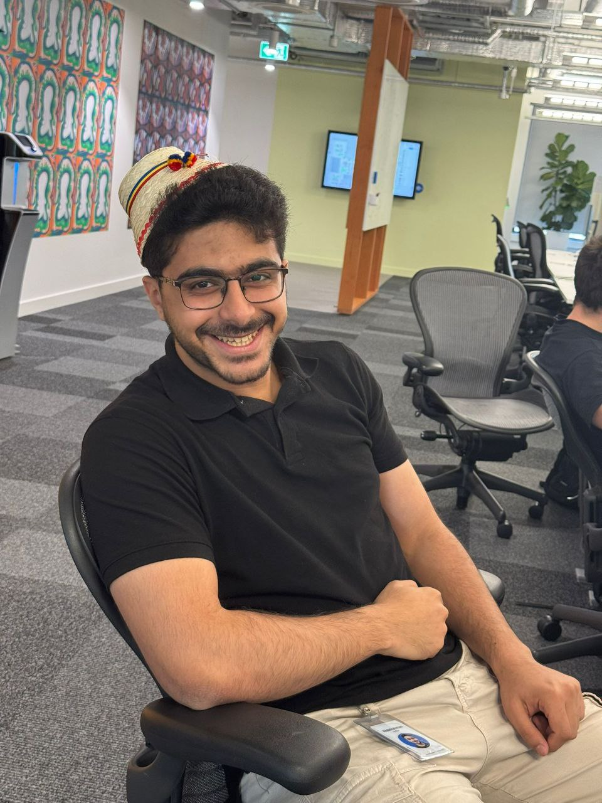

Abdelrahman Mohamed
Cybersecurity Graduate & Systems Developer
Welcome to my digital space. I am a cybersecurity graduate from Alexandria National University with a strong passion for scalable cloud infrastructure, backend development, and secure systems engineering.
Throughout my career, I have gained hands-on experience as a System Developer at a Stealth Startup, a DevOps Intern at Pixelogic Media, and a Network Production Engineering Intern at Meta. My work focuses on automating cloud infrastructure (AWS, Terraform), building scalable backend pipelines, and ensuring large-scale network reliability.